入口E8 00 CALL ~ Add ~
-
F7 步入
-
F8 步出
-
ctrl+F9 execute till return 跳出函数
-
ctrl+G 移动到指定位置
-
ctrl+F2 重新调试
-
F9 运行至断点处
-
Alt + B 打开Breakpoints，列出断点
-
；添加注释
-
alt+M 内存模块
-
ctrl+E打开编辑窗口
-
运行直接到断点处，步进步出逐行进行
快速查找指定代码
- 从入口处不断F8直到某个函数被执行，弹窗
- 查找字符串检索（有个思路，可以再IDA中看函数模块的地址，再在xdbg中ctrl+G跳转到地址）
- 查找调用模块
在main()处打断点，记作返回点
修改字符串
- 跳转至字符串溢出区buffer（就是地址，可以用IDA先找一下），ctrl+E打开编辑窗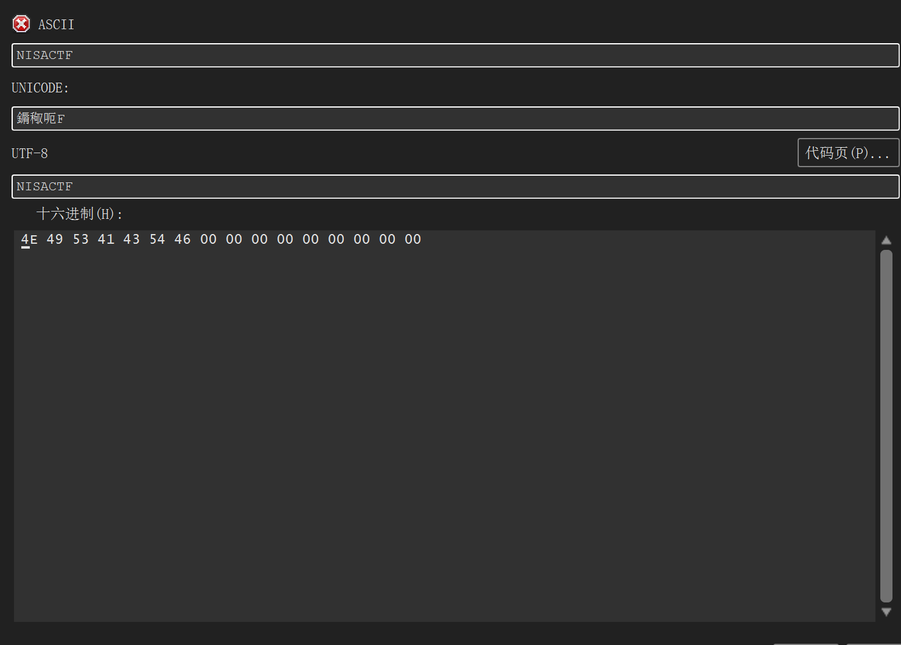
缺点：新字符串不能比原字符串长
- 方法二：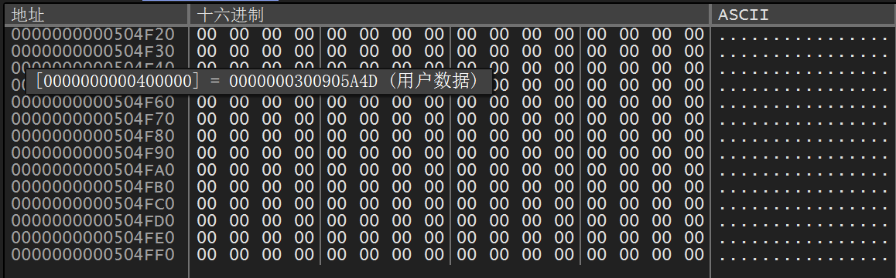
把字符串存到缓冲区，修改PUSH处指令ctrl+E
在原字符汇编指令处，空格键打开assemble窗口，改成”PUSH 504FF0“
栈顶指针ESP：向栈压入数据，栈顶指针减小，向低地址移动，从栈中弹出数据时，栈顶指针增加（理解成一个无盖容器底部装了一弹簧）
一些对于栈FILO（file in last out）的理解
在调试时，从一个函数入口处开始ESP地址减少，说明函数调用参数，把数据压入栈
crakeme2
F9运行后，首先调用的就是主函数
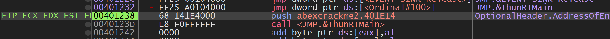
401248处的push401E14命令来把401E14压入栈，然后40123D处CALL<>调用401232处的JMP ThunRTMain函数，会跳转到主函数ThunRTMain，前面的401E14的值作为ThunRTMain()的参数，这是一个间接调用，利用错误消息框和字符串，字符查找，往上找条件分支
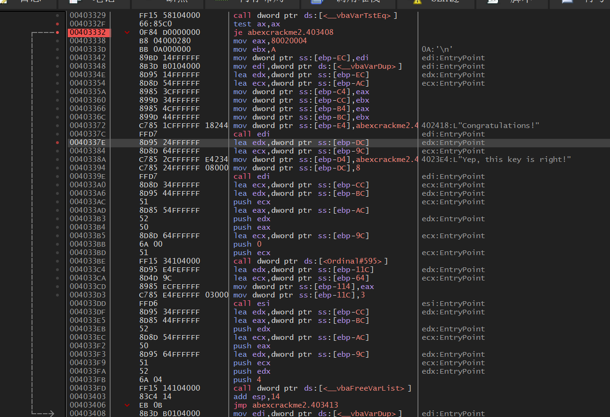
调用403329处的函数，比较函数值，再决定跳转
栈帧
PUSH EBP ;函数开始
MOV EBP,ESP;保存当前ESP到EBP中
....... ;无论ESP值如何变，EBP都保持不变
MOV ESP,EBP;将函数的起始地址返回到ESP中
POP EBP ;函数返回前弹出保存在栈中的EBP值
RETN ;函数终止
函数返回前要先从栈中删除与其对应的栈帧

按照传递给rctMsgBox()参数的大小14清理栈
RETN XX:根据传参的大小调整栈
PE头
DOS头：typedef struct_IMAGE_DOS_HEADER,e_magic:DOS签名,e_ifanew:NT头偏移
NT头：IMAGE_NT_HEADERS
UPX
upx -o 目标文件 源文件
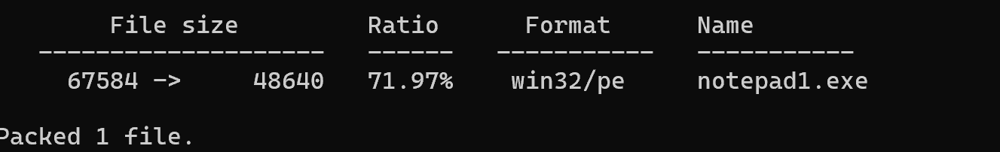
可以看到文件大小由67584变为48640，比ZIP压缩后大，是因为压缩后得到PE文件，需要添加PE头，并且还要放入解压缩代码
调试notepad程序
先找到EP代码（偶然发现一个好办法，只要在开头ctrl+F8，结束后xdbg会自动暂停到入口点）EP开始时0101开头，前面都是0701开头
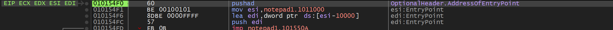
在EP处ctrl+F8开始代码追踪，发现有一个短循环，在循环末尾设置断点，F9跳出循环
UPX特征之一是,EP代码被包含在PUSHAD/POPAD指令之间，跳转到OEP代码的JMP指令紧接着出现在POPAD之后，只要在JMP指令处设置好断点，运行后就能直接找到OEP
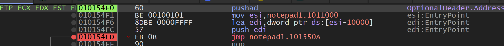
PE重定向原理
PE重定向就是PE文件无法加载到ImageBase所指位置，而是被加载到其他地址时发生的一系列的处理行为
基本原理：在应用程序中查找硬编码的地址位置，读取值后，减去ImageBase(VA-RVA),加上实际加载地址（RVA-VA)
先查找IMAGE_BASE_RELOCATION
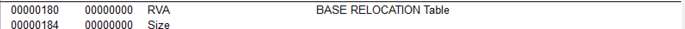
typedef struct _IMAGE_BASE_RELOCATION {
DWORD VirtualAddress; // 重定位页的 RVA
DWORD SizeOfBlock; // 重定位块的大小
WORD TypeOffset; // 重定位条目的类型于偏移
} _IMAGE_BASE_RELOCATION;
typedef IMAGE_BASE_RELOCATION UNALIGNED * PIMAGE_BASE_RELOCATION;
irtualAddress 重定位页 RVA。以映像装载基址加上页 RVA 的和作为被加数，再加上重定位项对应的 offset 就能得到其在内存中实际的 VA。最后一个重定位块的尾部也会添加一个 virtualaddress 字段作为结束标志。
SizeOfBlock 基址重定位块的大小。包括 VirtualAddress，SizeOfBlock，以及后面 TypeOffset 的大小。
TypeOffset 一个数组。数组中每个元素大小为 2 个字节，即 16 位。
type 高 4 位用于表示重定位的类型。
offset 低 12 位用于表示重定位数据位置相对于页 RVA 的偏移量。与 VirtualAddress 相加就是要修改的重定位数据的指针，再加上映像装载基址就是修改后的指针。
硬编码地址偏移：VirtualSize+Offset=1420(RVA)
减去ImageBase值
加上实际加载地址值
从可执行文件中删除.reloc节区
前提：删除基础重定位表对运行没什么影响
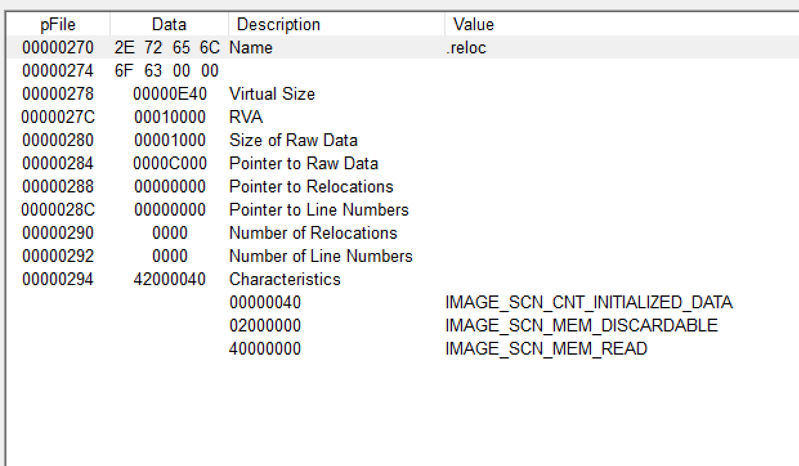
从文件偏移270开始，到297
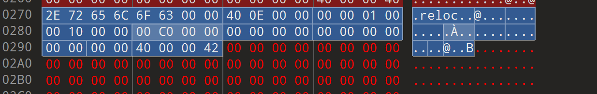
打开010Editor直接删除，至此,.reloc被物理删除，之后开始修改相关PE头信息（就像改配置一样）
修改IMAGE_FILE_HEADER-NUMBER of SECTIONS，5改成4
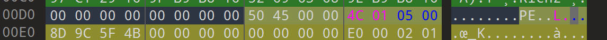
之后修改IMAGE_OPTIONAL_HEADER-size of image
VirualSize时E40，Section Alignment值为1000，故要减去1000
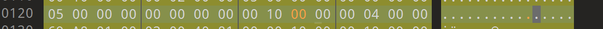
upack压缩后的文件
把PE文件头变形，这部分有点不太明白，大概就是增大SizeOfOptionalHeader的值，在IMAGE_OPTIONAL_HEADER和IMAGE_SECTION_HEADER之间添加额外空间，添加解码代码，如下
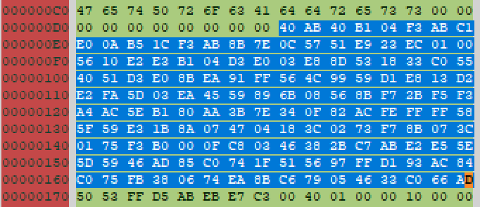
从170开始是IMAGE_SECTION_HEADER
打开section选项，观察到第一个节区和第三个节区rawoffset起始偏移都是10，由此可知Upack会对PE文件头，第一个节区，第三个节区进行重叠
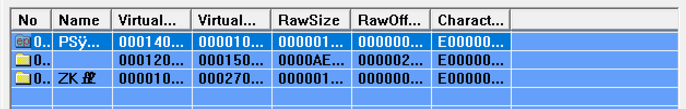
进行调试，先要找出EP入口，EP的RVA为1018，ImageBase为0100000，故EP的VA值为01001018，xdbg已经打好断点了
（忘记保存了）
Windows消息钩取
HookMain.exe最先加载Keyhook.dll安装键盘钩子，使用SetWindowsHookEX()安装键盘钩子，OS强制键盘输入事件，调用KeyHook.dll注入到相应进程的内存，调用KeuboardProc()函数，在ProcessExplorer中检索Keyhook.dll发现如下
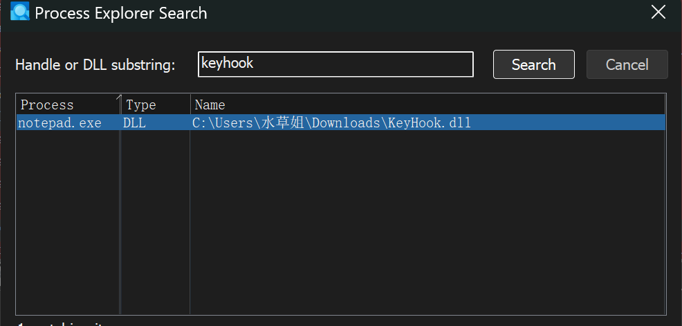
HHOOK SetWindowsHookEx(
int idHook,//hook type
HOOKPROC lpfn,//hook procedure
HINSTANCE hMod,//hook procedure所属的DLL句柄
DWORD dwThreadId,//想要钩载的线程
)